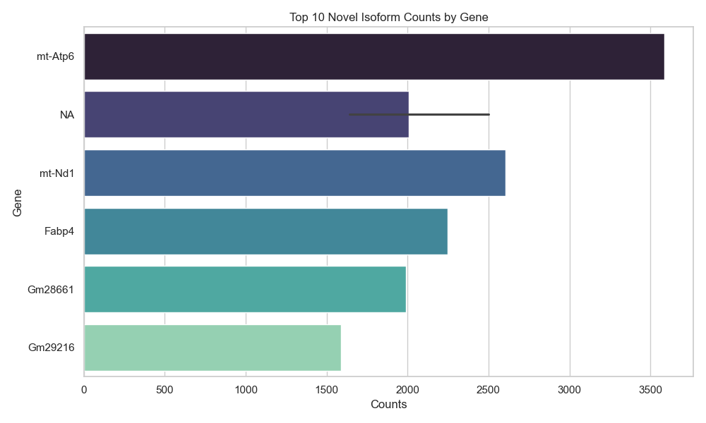

My bioinformatics pipeline/technical demo to uncover new RNA transcript variants using long-read RNA sequencing and as a learning tool.
This project analyzes a nanopore long-read RNA-seq dataset from murine (brown) brown adipose tissue using a reproducible FLAIR-based pipeline. I identified both known and previously unannotated (novel) isoforms and quantify their expression. This project also serves as a personal learning tool for an introduction to bio-informatics, focusing on basic data-analysis/pipeline.
- Source: NCBI SRA
- ID and Link: SRR33470049
- Technology: Oxford Nanopore long-read sequencing (on GridION)
- Tissue: Mouse brown fat
- Reference/Annotations: Ensembl FTP
Eif4g1, Cd36, H2-K1These results highlight previously unknown RNA diversity (with some admitted limitations) in metabolically active brown fat tissue.
Identifying novel isoforms can uncover new mechanisms of gene regulation, alternative splicing, and tissue-specific gene expression — especially in dynamic tissues like brown fat, which plays a role in energy metabolism.
Explore the code, data prep, and full Jupyter notebook with more information/indepth:
View on GitHub I'm Thaddeus Lipke, a SWE/EMT-B certified grad from Columbia Uni who wanted to learn some bio-informatics and get more into python.
Feel free to contact me, I'd like to learn more if something needs clarification or corrections (please correct me)! My contact is on the github repo for this!
This project helped me learn genomics tools like FLAIR, minimap2, and samtools — and apply them to a real-world RNA sequencing problem with a mouse dataset.